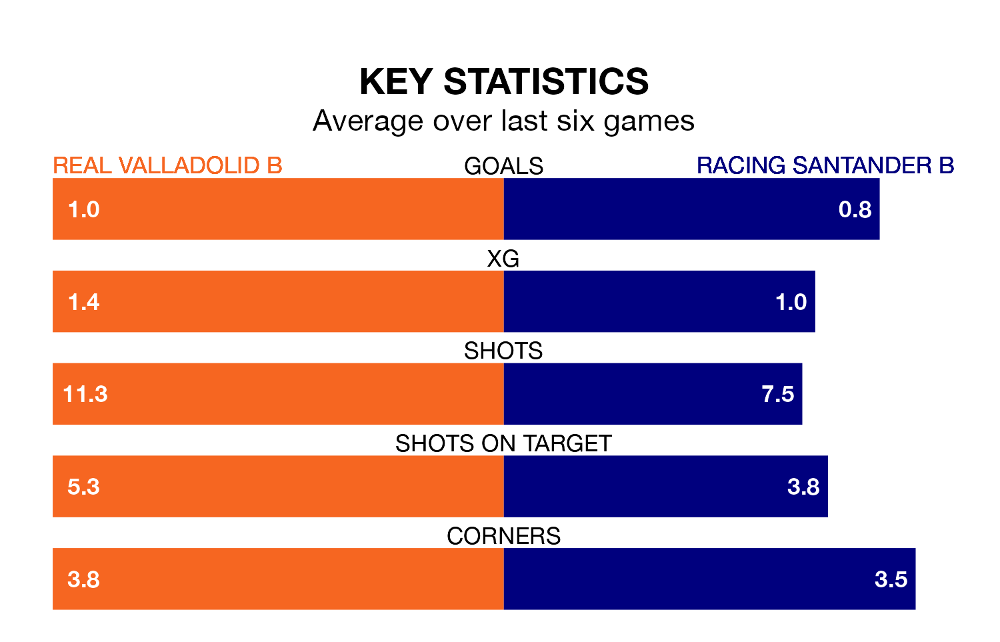

Real Valladolid B host Racing Santander B on Saturday at Campo 1 Anexos del José Zorrilla in Segunda División RFEF Group 1.
In their last league match, on February 3, Valladolid B drew with Real Avilés 1-1 away.
Racing Santander B won, 2-1 at home against Gimnástica Torrelavega.
With 31 goals in 21 games so far this season, Racing Santander B are the league's second-highest scorers with 1.5 goals per game. And they are conceding fewer than average, letting in 22 goals at a rate of 1.0 per game.
Valladolid B are also above average scorers, with 1.2 goals per game, compared to a league average of 1.1. They have conceded 1.6 goals per game.
The visitors are fourth in the table after 21 games, of which they have won nine and drawn seven, earning 34 points.
The home side are five places behind Racing Santander B in ninth, with eight wins and three draws putting them on 27 points.
Valladolid B are in disappointing form in Segunda División RFEF Group 1, with one win and two draws from their last six games.
With two wins and two draws over that period, Racing Santander B's form is better – they have taken eight points from 18, compared to Valladolid B's five.
In the last three years, Valladolid B and Racing Santander B have played each other on three occasions. Valladolid B won two of them and Racing Santander B one.
Their last meeting was on October 1, when Racing Santander B won 4-0 at home.
Updated: 14:59 (UTC), 05/02/24